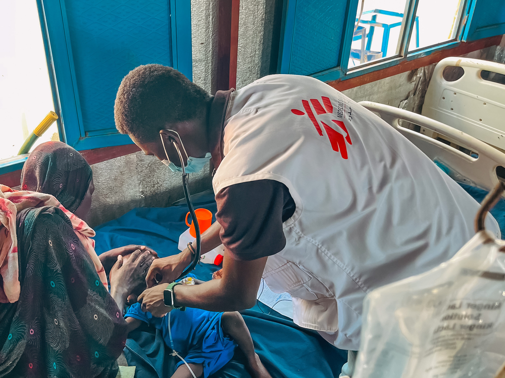
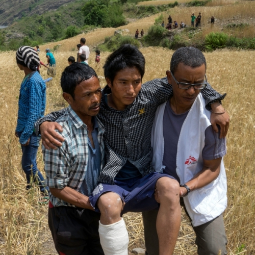
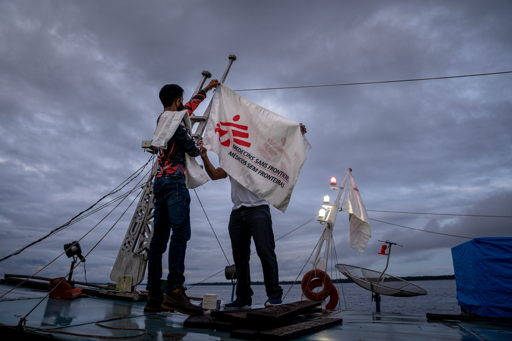

Agenda de Ações Sociais
- 14/09/2024: MSF amplia oferta de cuidados de saúde com qualidade no território Yanomami
- 24/07/2024: MSF realiza treinamento sobre atendimento a sobreviventes de violência sexual em Portel, na região da Ilha do Marajó
- 31/07/2024: Médicos Sem Fronteiras desembarca em Recife com o evento Transformações: série de atividades gratuitas para a população
Projetos Atuais
Atualmente, a Médicos Sem Fronteiras está atuando em diversas frentes no Brasil e no exterior. Nossos projetos incluem:
- Ucrânia:Bombardeios implacáveis e indiscriminados na Ucrânia precisam parar
- Gaza:Em Gaza, nenhum alívio é possível para pacientes com queimaduras
- Sudão:Dois anos de guerra no Sudão
Galeria de Imagens

Campanha de vacinação em área rural

Equipe atendendo refugiados em campo

Unidade de ajuda humanitária de saúde em comunidades